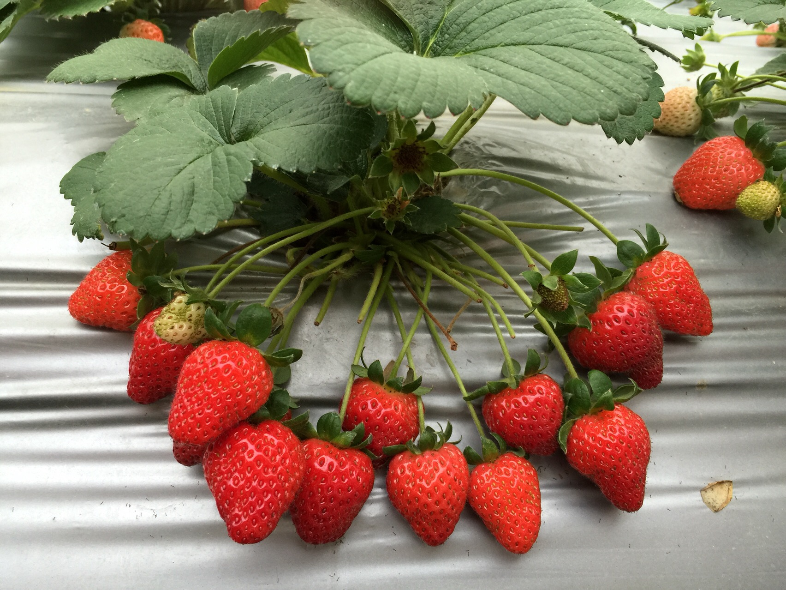
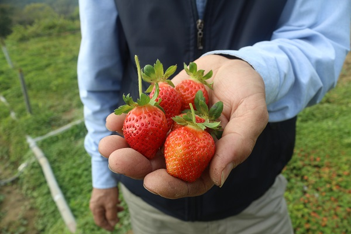

草莓
酸酸甜甜 草莓
又名洋莓、紅莓、地莓或草果，為薔薇科多年生草本。 其形如雞心，紅似瑪瑙，果肉細嫩多汁，酸甜爽口，營養價值很高，含豐富維他命C，有幫助消化的功效，也被人們譽為「水果皇后」。

草莓的營養價值
每100克草莓果肉中含糖8至9克、蛋白質0.4至0.6克，維生素C50至100毫克，比蘋果、葡萄高7到10倍。
而它的蘋果酸、檸檬酸、維生素B1、維生素B12，以及胡蘿蔔素、鈣、磷、鐵的含量也比蘋果、梨、葡萄高3到4倍。，
因次臺灣人把草莓稱爲“活的維生素丸”，德國人也把草莓譽爲“神奇之果”另外草莓還含有果膠和豐富的膳食纖維，可以幫助消化。

草莓的產地與產期
草莓主要的產期是12月中旬～隔年5月上旬，而2月中旬～4月下旬為盛產期。
苗栗大湖又稱草莓王國，是台灣產量最多、種植面積密度最高、草莓種植技術最成熟的地方，另外台北內湖、新竹關西、台中后里、雲林林內、南投國姓、台南善化有都看得到草莓的蹤跡唷
資料來源: